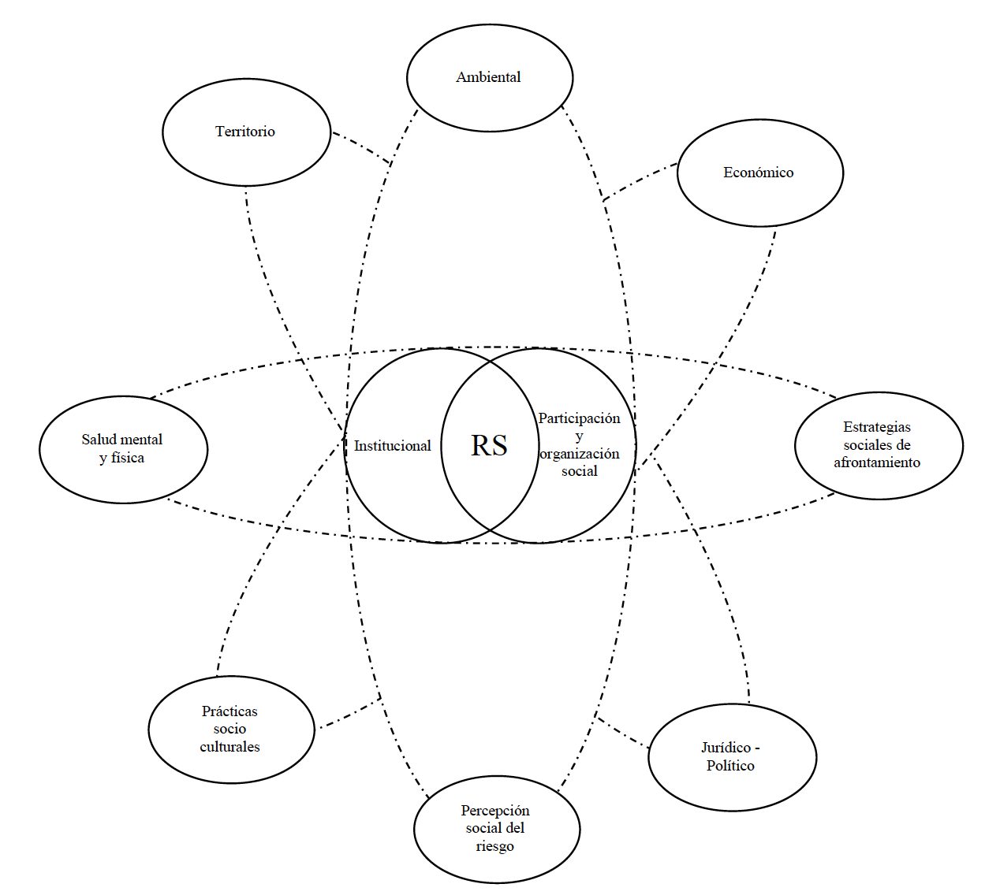

![]()
Resumen
El reasentamiento se ha convertido en un generador de nuevos riesgos para las comunidades al no priorizar el marco social que le constituye. Así, el estudio tuvo como objetivo identificar y conceptualizar los componentes psicosociales estratégicos para la planificación, ejecución y seguimiento de procesos correctivos de reasentamiento social para el contexto colombiano, con el fin de fortalecer los modos de vida de las comunidades, el desarrollo sostenible y la ampliación de libertades humanas. Se utilizó un diseño de corte cualitativo con enfoque hermenéutico centrado en el estado de la cuestión, usando como método el análisis de contenido categorial. Se analizaron doscientos documentos realizados en países latinoamericanos en el periodo 1991–2015 a partir de la categoría de análisis: reasentamiento poblacional asociado a amenaza natural, se adelantaron seis grupos focales y siete entrevistas semiestructuradas. Los resultados evidencian diez componentes sociales claves en proyectos de reasentamiento: territorial, ambiental, económico, estrategias sociales de afrontamiento, salud mental y física, prácticas socio culturales, percepción social del riesgo, jurídico-político, participación y organización social, e institucional. Se propone en la discusión el carácter performativo de estos componentes sociales, en cuanto la planeación, ejecución y seguimiento de cada uno implica que sea reinventado según las tensiones, rupturas y sintonías del contexto.
Abstract
Resettlement has come through new risks for communities as its social framework has not been prioritized. Thus, the study aimed to identify and conceptualize the strategic psychosocial components for the planning, execution and monitoring of corrective processes of social resettlement for the Colombian context, in order to strengthen community livelihoods, sustainable development, and expansion of valuable freedoms. It was used a qualitative design with a hermeneutical approach focused on the state of the question, using categorical content analysis as a method. Two hundred documents made in Latin American countries in the period 1991–2015 were analyzed based on the category of analysis: population resettlement associated with natural hazards, six focus groups and seven semi-structured interviews were carried out. The results stress out ten key social components in resettlement projects: territorial, environmental, economic, social coping strategies, mental and physical health, socio-cultural practices, social risk perception, legal-political, social and institutional participation, and organization. In the discussion, the performative is embedded in these social components as the planning, execution and monitoring of each one should be reinvented according to the tensions, ruptures and tunings of the context.
5.3 INTRODUCCIÓN
Los casos de reasentamiento correctivos asociados a amenazas socio-naturales se soportan en el diagnóstico de riesgo no mitigable en una zona específica, donde la vulnerabilidad construida puede desencadenar un conjunto de afectaciones negativas para la integridad física, mental, social, económica y cultural de los habitantes de la zona. Bajo este marco, el reasentamiento correctivo es un proceso que constituye la última alternativa para reducir los riesgos de un determinado grupo poblacional al considerarse su complejidad [1].
El reasentamiento correctivo se convierte en un desafío nacional para la creación y fortalecimiento de estrategias sociales encaminadas a reducir riesgos de desastres, donde salvaguardar la integridad biológica (vida humana) y dar solución habitacional no es la única línea de acción del proceso, por el contrario, es necesario que se formulen planes y programas para el desarrollo sostenible. Este desafío es aún mayor cuando se analizan y desarrollan componentes psicosociales en los procesos de reasentamiento correctivo. La experiencia latinoamericana se convierte en un referente, especialmente Colombia, donde se muestra que no basta con entregar una vivienda que estructuralmente se adapte a la satisfacción de necesidades básicas de las personas y familias [1], [2], [3], [4], [5], suficiente con revisar las experiencias documentadas de reasentamientos sociales en el orden nacional, entre ellas, el terremoto y el tsunami de Tumaco (1979), terremotos de Páez (1994) y Armenia (1999), erupción del volcán Nevado del Ruiz (1985), movimientos de Masa en Villatina (1987), la inundación de Girón (2005), y las avalanchas desencadenadas por la erupción del volcán nevado del Huila en Belalcázar (2008) y por desbordamiento de una quebrada en Salgar (2015), para confirmar lo anterior (se recomienda al lector revisar la bibliografía del presente documento donde podrá encontrar amplia información al respecto).
El marco social del reasentamiento se ha limitado a censos, inventarios y caracterizaciones demográficas [6], [7], [8], así como a estrategias y respuestas a corto plazo, de corte reactivo, que eluden nuevos riesgos en los territorios [9], [10]. La vivencia Latinoamericana [11], [12], [13] ha mostrado cómo incontables proyectos de reasentamiento han contribuido a la construcción de comunidades más vulnerables [14], [15], [2], [16], [17], al no considerarse ningún componente psicosocial en estos procesos. Se hace imprescindible, entonces, ahondar en aquellos componentes constitutivos de lo psicosocial, pues es allí que pueden consolidarse acciones participativas explicitas y claras para todos los actores. El reasentamiento requiere de un acompañamiento psicosocial a las personas y comunidades que serán reasentadas, así como, en caso de existir, a los habitantes del territorio receptor, de tal manera que el proceso genere la menor cantidad de traumatismos posibles en el tejido social.
Lo psicosocial se entiende como el proceso relacional “(…) desde cuyas interacciones se hace posible la asimilación del mundo y sus componentes” [61]. El acompañamiento psicosocial, en este sentido y para el contexto que convoca, se enfoca en la promoción del bienestar y la salud mental, en el fortalecimiento de modos de vida y en la resignificación del hábitat con las familias o comunidades que deben reasentarse, y las receptoras en caso tal que aplique, reconociendo procesos culturales, sociales, políticos e históricos en el marco de una garantía de Derechos Humanos, que en palabras de Berenstein, se convierte en un enfoque para los propósitos de un acompañamiento psicosocial [62]. Para el contexto de reasentamiento, este enfoque es primordial, no solo por la relación directa que existe con lo jurídico -el plan de acción debe de estar bajo estándares de protección de derechos humanos internacionales- [64], sino también, porque el derecho a una vivienda digna, debe ser el orientador del acompañamiento psicosocial, “(…) resaltando la importancia de la habitabilidad, la seguridad de la tenencia y la asequibilidad.” [65].
Tal garantía de derechos es la que da paso a la sostenibilidad (comunitaria, institucional, personal y del proceso de reasentamiento). La sostenibilidad implica reconocer que las acciones humanas en los contextos ambientales, sociales, económicos y culturales no pueden estar en detrimento de estos, por el contrario, precisan de la búsqueda y configuración de relaciones que garanticen la existencia de las generaciones actuales, así como el bienestar psicosocial de las futuras, dando especial atención al equilibro ecosistémico que posibilite la armonía de la vida, armonía en la que no se reduzcan a cosas de uso otras formas de vida [66], [67].
Latinoamérica muestra que el reasentamiento posee diversas definiciones, algunas de ellas se centran en lógicas de construcción de vivienda, otras enfatizan el impacto ocasionado por el cambio de territorio, las transformaciones productivas, y la generación de mecanismos legales para la protección y compra de predios. Con base en este panorama, el autor y las autoras proponen la modificación de reasentamiento poblacional por reasentamiento social, para situarse en un concepto que evoca las múltiples responsabilidades de este proceso.
En consecuencia, las autoras y el autor entienden el reasentamiento social como la resignificación del vínculo con el entorno socio-natural, asociado al traslado de familias, comunidades y organizaciones de un territorio donde han configurado sus modos de vida, a otro espacio que se percibe como un nuevo hábitat. Este movimiento impacta directamente el tejido social construido. Por tal motivo, es indispensable un accionar conjunto, en los momentos de planificación, ejecución y seguimiento, de las instituciones, familias y comunidades, aportando a condiciones seguras y acciones sostenibles que propendan por el respeto hacia las prácticas culturales, el bienestar físico y mental, el mantenimiento y mejoramiento de relaciones económicas y educativas, tanto de las personas que se trasladan como de los habitantes de entornos receptores.
La definición anterior, reconoce los llamados de atención identificados en la revisión bibliográfica, mismos que se sintetizan a continuación:
El análisis del contexto como principio para la planeación de cualquier proyecto de reasentamiento correctivo y sus fases [2].
La reducción del riesgo no puede ser la fuente de nuevos riesgos naturales o sociales en otros territorios [2], al respecto Serje [21] indica que “los proyectos de reasentamiento no pueden entenderse únicamente como medida de compensación o de mitigación, sino como una posibilidad de consolidar una cultura y una práctica política incluyente.”
Es necesaria la articulación institucional y comunitaria desde la planeación situada en procesos de participación ciudadana, proyectos productivos que fortalecen fuentes de ingresos a los habitantes, asesorías jurídicas para la regulación de avalúos y acompañamiento psicosocial. [3], [4], [22], [47].
El reasentamiento implica un alto grado de incertidumbre para los actores sociales participantes [18], no solo por los cambios estructurales realizados, sino también por nuevas cotidianidades y formas de habitar el territorio destino. Por tal motivo, se requiere que cada una de las familias, organizaciones e instituciones vinculadas, se identifiquen con el plan de acción y trabajo del proyecto, a través de la concertación donde se discutan acciones realizadas y planeación de avances, de tal manera, que se solventen interrogantes, se reduzcan tensiones y conflictos desde las voces de todos los actores sociales [2], [19], [20], [21].
Es prioritario invertir en recursos humanos y materiales para el abordaje del enfoque social en los procesos de reasentamiento en sus fases de planificación, ejecución y seguimiento, “[…] siendo un soporte para la toma de decisiones en cada una de las fases del proceso de reasentamiento” [18].
Reconocer la sostenibilidad de los procesos de reasentamiento social como medida correctiva del riesgo, deviene en reconocer un marco referencial donde las acciones del presente permitan garantizar la existencia de las formas de vida del futuro, sosteniendo y posibilitando interacciones psico-socio-ecológicas [68], donde las prácticas relacionales que impactan el tejido socio-ambiental garanticen la permanencia del mismo sin llegar a fracturarlo, o afectarlo de maneras irreversibles [66].
5.4 RESULTADOS
Los resultados del presente estudio se categorizaron en diez componentes psicosociales del reasentamiento social. La tabla 1 sintetiza los componentes encontrados en la revisión documental según país, por su parte la figura 1 condensa la relación encontrada entre los componentes psicosociales.
Tabla 1. Componentes psicosociales investigados por país. Fuente: propia.
| Componente | País | País | País | País | País | País | País | País | País | País | País | País | País | País | País |
|---|---|---|---|---|---|---|---|---|---|---|---|---|---|---|---|
| Componente | Argentina | Bolivia | Chile | Colombia | Cuba | Ecuador | El Salvador | México | Perú | Costa Rica | Uruguay | Venezuela | Paraguay | Honduras | Otros |
| Estrategias sociales de afrontamiento | X | X | X | X | |||||||||||
| Participación y organización social | X | X | X | X | X | X | X | X | |||||||
| Percepción social del riesgo | X | X | X | X | |||||||||||
| Prácticas socioculturales | X | X | X | X | X | X | X | ||||||||
| Salud mental y física | X | X | X | X | X | X | |||||||||
| Territorio | X | X | X | X | |||||||||||
| Jurídico-político | X | X | X | X | X | X | X | X | X | X | X | ||||
| Ambiental | X | X | X | X | |||||||||||
| Institucional | X | X | X | X | X | X | X | ||||||||
| Económico | X | X | X | X | X | X | X |
Se establece una correlación entre los países donde se encontró mayor prevalencia de bibliografía según componente. Es preciso mencionar que los países que abordan la totalidad o gran mayoría de estos son Colombia y México situación que no sería menor dado que como ya han expresado otros estudios, estos países concentran la mayor cantidad de daños y pérdidas asociados a situaciones de desastre en América Latina [CEPAL].

Componente institucional
El componente institucional se entiende como la asistencia, orientación y acompañamiento en las comunidades por las instituciones, de carácter público y privado, en función de planes de reasentamiento que logren el aporte a una mayor calidad de vida de las personas participantes del proceso. La articulación interinstitucional en función de los derechos constitucionales y las rutas de comunicación entre la institución y las familias, comunidades y organizaciones, se convierte en uno de los principales aspectos para concretar este componente, donde la actuación ética de cada uno de los implicados es primordial para cumplir los objetivos del reasentamiento social.
Anzellini [22] resalta la importancia de coordinar conjuntamente entre organizaciones los procesos, en las fases de planeación, ejecución y seguimiento. Es necesario que el actuar institucional esté mediado por la retroalimentación de las actividades, propósitos comunes, y ejecución conjunta debido a que, como lo refieren Gallart y Greaves “es de suma importancia que el trabajo de monitoreo se inicie paralelamente al de la entidad ejecutora, ya que, si no se comparte una base informativa y analítica (diagnóstico común) los problemas planteados por los monitores parecen ilegítimos, resultan extemporáneos o son de difícil absorción por el ejecutor” [23]. En complemento, y como fue expresado en uno de los grupos focales “no se puede trabajar con la comunidad si primero no se han reunido las entidades, si hay ambigüedades la gente la coge (lo percibe) ahí mismo” [69]. De allí que la prioridad, tal como se planteaba en una de las entrevistas, es ponerse “el chaleco del proceso y no de la institución” [61]. Este componente logra ser representativo en algunas experiencias de México, especialmente los reasentamientos de Aguamilpa y Zimapán (1992). Allí se establecieron propósitos interinstitucionales en proyectos de reasentamiento direccionados a responder las necesidades comunitarias actuales, futuras, desde la optimización de recursos.
Componente participación y organización social
Este componente se entiende como el ejercicio donde los miembros de una familia y/o comunidad opinan libremente sobre algún tema, concertando las decisiones consideradas más adecuadas para su sostenibilidad bio-psico-socio-histórica. De esta manera, las decisiones deben ser concertadas desde el marco de los Derechos Humanos, reconociendo estructuras organizativas definidas a nivel local, tales como, juntas de acción comunal, organizaciones de la sociedad civil, consejos comunitarios (forma de organización específica para comunidades afrodescendientes), resguardos y cabildos (forma de organización de comunidades indígenas).
Este componente reconoce la diversidad cultural y las perspectivas de enfoque diferencial para la participación. Ver el reasentamiento social, como un ejercicio mancomunado implica entonces “construir esto con la comunidad, pero no es imposición, o si no va a haber todas las resistencias…” [62].
Bajo este marco, Rey [24] al analizar los reasentamientos en el departamento de Bolívar y Molina-Prieto y Victoria [12] en Bogotá, enfatizan la participación y organización social como dinamizadora de la planificación, ejecución y seguimiento de los proyectos de reasentamiento. En sintonía, uno de los grupos focales con representantes comunitarios consideró: “en una asamblea, nosotros nos fuimos notando sin tener estudio, por actividad y por amor a esto, por el sentido de pertenencia, entonces a uno lo van identificando, este es líder, este le gusta, este trabaja para la comunidad no para él y vivimos como empresa comunitaria unos siete años” [71]. Este componente así, aborda las dificultades sociales desde las potencialidades comunitarias, permitiendo que sus estructuras y formas de organización sean recursos para la concertación.
Componente Jurídico-Político
Este componente contempla la ejecución y promoción de mecanismos legales para las familias, comunidades y organizaciones, que serán reasentadas con el fin de proteger su honra y dignidad; asimismo, se incluye el tratamiento legal referente al proceso de reasentamiento social de los territorios de origen y destino, tales como las políticas públicas que le atañen. Este componente incluye la gestión pública en la búsqueda de recursos económicos para la ejecución del proyecto, enfatizando en los objetivos de desarrollo sostenible, desde un enfoque de derechos. En conclusión, el componente jurídico-político lleva a que se muestre una institucionalidad con flujo de información, tratamientos legales pertinentes y lineamientos comunes que se direccionen por el desarrollo endógeno y estructural desde la transparencia.
Este componente se encuentra inmerso en múltiples marcos políticos y conceptuales. El Banco Interamericano de Desarrollo en asociación con líneas de acción estatales, tal como el caso de Perú [25], El Salvador [26] y Argentina [27], han generado reflexiones en torno a este componente desde la generación de políticas públicas. Villegas [27] inspirado en Honduras, se concentra en plantear los grandes impactos que traería una política de reasentamiento, puesto que, “[…] facilitaría la articulación de los procesos de reasentamiento con las estrategias y planes sociales y económicos de los distintos niveles territoriales (local, regional y nacional)”. Entre tanto, Costa Rica expidió su política nacional de vivienda y asentamientos humanos para un periodo de 2013 a 2030, donde priorizó un rol estatal de acompañamiento e intervenciones integrales para una mejor calidad de vida en sus habitantes [29].
Sin embargo, con respecto al panorama latinoamericano anterior, surgen tensiones y discrepancias. Uno de los grupos focales con expertos en reasentamiento, plantearon que “la política pública no se hace para un efecto de un problema, como el reasentamiento, para algo que salió mal, porque si se trata de hacer lo mejor posible para el problema, entonces cuándo se va acabar.” [72]. Así, desde esta perspectiva, si se tiene una política pública de reasentamiento, se acepta que el problema va a continuar y la capacidad del estado solo puede estar en función de corregir la situación. Uno de los expertos continuó la intervención, estableciendo un ejemplo de un país en Latinoamérica “[…] inventaron una cosa imposible de cumplir, imposible de desarrollar, generaron una política específica, prácticamente está escrita de punta a punta con miles de aspectos y detalles buscando la excelencia, ellos dicen que ha sido su peor equivocación” [72]. En complemento, Quito [30] y Colombia [31], indican la necesidad sobre políticas integrales de gestión del riesgo de desastres, pues es allí donde se reflejan los resultados positivos y exitosos de cada proceso. Así, este componente contribuye al cumplimiento de derechos, tal como el derecho al trabajo, a una vida cultural, a un nivel de vida adecuado, y a la educación, resaltando la condición humana en el ejercicio de habitar.
Componente territorial
Este componente enmarca las fronteras geopolíticas que configuran un espacio físico determinado y la relación entre las características del entorno con aspectos socioculturales, que llevan a la conformación de referentes, símbolos y sentidos, que se reconocen fácilmente por la comunidad, dando paso a configuraciones identitarias las cuales influyen en el fortalecimiento de redes de apoyo y lazos vecinales.
Wilches-Chaux [32] nomina la categoría de “seguridad territorial”, la cual “[…] busca que la sostenibilidad de las comunidades humanas avance de manera interrelacionada y en lo posible simultánea junto con la sostenibilidad de los ecosistemas, y viceversa”. Asimismo, los avances realizados por Chardon [4], Ocampo y Forero [33] y Peláez [16] resaltan nociones de identidad barrial, memoria con el entorno y la vivienda, y el principio contextual, desde un marco territorial, para procesos de reasentamiento con el ejercicio de habitar en perspectiva de desarrollo sostenible.
Reconocer la simbología que se construye en el territorio es de fundamental relevancia en los procesos de reasentamiento social, disponer el psiquismo y las características sociales para configurar territorio es un proceso psico-social, de ahí que las comunidades están dispuestas a dotar de sentido y de-construirse con base en el sentido elaborado. La comunidad construye sus vínculos en otros escenarios (albergues temporales) lo que genera mayores riesgos. Por tal motivo “…hubo dispersión del núcleo municipal… se han arraigado mucho al nuevo sitio. Hay jóvenes que no quieren volver al pueblo que se está construyendo…” [62]. Este componente enfatiza la apropiación comunitaria del territorio receptor: “Se cambió el diseño arquitectónico en Páez, donde la gente le puso sus flores, la gente se apropió, y cuando la corporación involucró en la mano de obra la comunidad y compró allá los materiales, hizo que la gente se sintiera propia…” [60].
Lo anterior reconoce que en un proceso de reasentamiento por riesgo no mitigable, el vínculo ser humano-territorio se torna vital, puesto que, en cuanto no se considere en un proyecto, surgen estrategias de resistencia social que se muestran como obstáculos en el proceso. Situación que configura un riesgo residual, en la medida que desconocer aspectos de la construcción social del riesgo deviene una falencia prospectiva, y como ya se ha mencionado por varios autores, los procesos de reasentamiento social no pueden representar la edificación de nuevos escenarios de riesgo para las comunidades o los territorios receptores.
Componente económico
Este componente contempla el fortalecimiento de las manifestaciones del poder adquisitivo, intercambios de remuneración entre miembros de la comunidad, y otras prácticas culturales de sostenimiento económico, en un marco de promoción y defensa de los derechos humanos y del desarrollo sostenible. Esto se puede expresar en la posesión de bienes materiales, propiedades, generación de empleo a través de vecindades productivas, y dinámicas que generen distribución de recursos y remuneración de factores de producción, incidiendo en la calidad de vida de manera individual y colectiva. El componente económico, es necesario para la satisfacción de las necesidades básicas de las familias reasentadas y receptoras, vincula también proyectos de vida conjuntos que aportan a construcciones sociales para el nuevo territorio.
Algunas experiencias en México citan el desempleo y la inseguridad alimentaria como factores que impactan negativamente la calidad de vida [34], [10], [11]. Para el caso colombiano, diferentes experiencias tomaron como lección aprendida mejoramiento de la producción económica como aspecto clave para acciones sostenibles, entre algunos casos, Boquerón, Cundinamarca [35], La Comuna Ciudadela del Norte, Manizales [36], El Hatillo, Cesar [8] y Morro de Moravia, Medellín [37].
Castro [38] sintetiza la importancia de generar procesos económicos sólidos para los habitantes en términos de su calidad de vida, redes de apoyo y sentido de pertenencia en el nuevo territorio: “Se echan raíces cuando existen estrategias y procesos productivos cuya implementación dinamiza el crecimiento económico, la movilidad social y la generación de recursos y excedentes, lo cual le otorga a la comunidad la capacidad de relacionarse en términos de relativa autonomía.”
Estos procesos productivos son sujeto de la relación entre instituciones gubernamentales, sector privado y comunidades, la cual no debe estar centrada en el asistencialismo, sino en el acompañamiento a partir de vínculos recíprocos de beneficio que facilite la construcción de capacidades conjuntas. Así, este componente deja de lado posturas paternalistas que inciden en la consolidación de comportamientos pasivos por parte de la comunidad, para dar paso a experiencias como: “Hicimos la empresa comunitaria […] Supieron leer nuestras capacidades y pudimos sostenernos por ocho años” [71]. Aquí emerge con gran potencia los escenarios dialógicos entre los actores del proceso de reasentamiento social, toda vez que será necesario, aunque no deseable, los cambios en la vocación productiva de las comunidades, y en caso tal de ser así, esto solo será viable en la medida que sea un proceso concertado. De lo contrario devienen resistencias comunitarias al reasentamiento, lo que representa una expresión adicional del riesgo residual.
Componente prácticas** socioculturales**
Este componente hace referencia a las construcciones colectivas de trayectoria socio-histórica en familias, comunidades u organizaciones sociales, evidenciadas en tradiciones religiosas y espirituales, espacios de vecindad habituales, ideologías compartida respecto a fenómenos específicos e intenciones explícitas en cada uno de los grupos sociales. Permean el accionar entre significados y sentidos que configuran continuamente la identidad social y el impacto en la calidad de vida de los habitantes. Si bien este componente tiene íntima relación con el de participación y organización social, este hace énfasis en acciones y creencias colectivas, muchas veces sucedidas de generación en generación, que no necesariamente implica la consecución de escenarios de participación.
El componente prácticas socio-culturales ha sido el más analizado a nivel latinoamericano por algunos autores. Tomando como caso México [34], [23], se analiza la importancia de realizar procesos de seguimiento y monitoreo al desarrollo cultural una vez se hayan realizado los reasentamientos, de tal manera, que se garantice la calidad de vida de las personas, además de considerar el conocimiento cultural de las poblaciones que deban ser reasentadas. De ahí que el primer autor exhorte por “…preguntas sobre la dinámica de los pueblos y las estructuras y las fracciones de estos antes de iniciar cualquier negociación […] sería necesario vivir en los pueblos y documentarse sobre su vida antes de comenzar con entrevistas censales formales” [34].
Olivera y González [39] por su parte, resalta una propuesta multidimensional para comprender la complejidad de los procesos de reconstrucción social, tomando como caso Cuba, donde se considera de gran relevancia las dimensiones social-cultural, económica, tecnológica y ambiental. Por su parte Bijit [40], inspirado en el caso de Chile, enfatiza la integración de los componentes comunitario, institucional y de prácticas socioculturales. En esta línea, el tejido social es analizado a través de lazos comunitarios, afectivos y territoriales, los cuales constituyen prácticas culturales específicas y diversas [41]. En Colombia llaman la atención los adelantos de Mena [41] quien rescata el vínculo cultural que se transfiere a la vivienda para la construcción comunitaria. En complemento, Hurtado y Chardon [20] comprenden el reasentamiento desde el hábitat y las prácticas de la cotidianidad comunitaria.
En términos metodológicos para este componente, Duque [43] destaca las redes económicas y sociales como bases para diseñar las estrategias para un proyecto de reasentamiento. Quiñonez [44] establece la cartografía social como uno de los medios para la participación. Por tanto, si uno de los hilos que permite tejer y unir la sociedad se sustenta en las prácticas que culturalmente se han construido, omitir su análisis y protección en los procesos de reasentamiento, crea el escenario para que el tejido social se desintegre, afectando la salud mental y física de sus miembros, junto con los vínculos en el territorio antiguo y receptor.
Componente ambiental
Este componente hace referencia al análisis y la intervención del ecosistema para la preservación de la fauna, flora y recursos naturales, así como, el fortalecimiento de las dinámicas relacionales entre hombre y naturaleza en el territorio de origen y destino que aporta a la seguridad económica y cultural de la comunidad reasentada. Este componente da cuenta también, de la protección del entorno que será receptor, a través de estrategias de conservación de la biodiversidad, donde “la interacción con la naturaleza en un diálogo recíproco y unificador posibilita la construcción de una cultura del riesgo que contribuya al reconocimiento de la heterogeneidad del territorio y los valores culturales de los seres humanos que lo habitan…” [45].
Entre los análisis latinoamericanos destacados para este componente, se resaltan el trabajo de Sandoval, Boano, González y Albornoz [46], quienes enfatizan la correspondencia entre justicia ambiental y resiliencia humana. Frente a los procesos de reasentamiento, Serje [21] menciona “la forma en que se configuran los paisajes (tanto el que se deja atrás como el del lugar al que se llega), la manera como se usan los recursos y, en general, la huella ecológica que cada asentamiento humano deja en el entorno”. Wilches-Chaux [47] para el caso del reasentamiento de San Cayetano, establece que el “derecho a que la voz de la naturaleza sea escuchada en la toma de decisiones (…) determinarán el rumbo de los procesos de recuperación, reconstrucción y desarrollo”. Bajo estas miradas, el componente resulta ser necesario para lograr equilibrios ecosistémicos que favorezcan relaciones de cuidado del entorno.
Componente percepción social del riesgo
Este componente comprende la articulación de sensaciones y aprendizajes, que permiten a la familia, comunidad u organización construir juicios de valor respecto a una situación o fenómeno potencialmente amenazante. Esta percepción aporta a la definición de una realidad social en la cual se establecen criterios de selección de entornos seguros o peligrosos, influyendo en la resignificación del vínculo con el territorio, valorando si el entorno le permite mejorar su calidad de vida, o por el contrario, puede poner en riesgo sus modos de habitar.
A partir de la revisión documental, Erazo [48] en los análisis que realiza al proceso de reasentamiento de la comunidad Genoy (Nariño), así como Serje y Anzellini [17] en la Mesa Nacional de Diálogos sobre Reasentamiento Poblacional, reconocen la importancia de percepciones frente a situaciones de riesgo en comunidades y organizaciones, incidiendo en las relaciones y vínculos que se puedan crear con los profesionales del proyecto, como su legitimidad. Bajo este marco, un representante comunitario exalta “No nos explicaban muy bien por qué una amenaza, nosotros nunca nos imaginamos que ese rio iba a parar en el nevado” [73].
Este componente resulta ser reiterativo por parte de líderes comunitarios, funcionarios institucionales y expertos partícipes de las entrevistas y los grupos focales del estudio realizado, “en el caso de la Sierra las entidades hicieron por su lado su proyecto, la comunidad nunca estuvo de acuerdo con ese proyecto, la gente dijo, a mí no me gusta yo no me voy…” [60].
Estas observaciones exponen la íntima relación o conflicto entre lo que se representa como riesgo para cada uno de los habitantes y lo que se visibiliza como oportunidad de desarrollo para las instituciones y comunidades participantes, en cuanto su desenlace puede ser un “desencuentro entre la posibilidad de defender la vida humana ante la amenaza y la posibilidad de decidir donde se quiere morir; el desencuentro entre el irse y el quedarse” [48].
Por tanto, para este componente las instituciones necesitan reconocer que sus conclusiones no son las únicas válidas, y las comunidades precisan entender que su historicidad no es la única que da cuenta de los procesos; lo anterior, solo deja un camino, y es la construcción conjunta de conclusiones, planes de acción, reglas de socialización, resignificando la relación que genere beneficio para ambas partes.
Componente estrategias sociales de afrontamiento
En sintonía con el Marco de Sendai y la revisión realizada se entienden las estrategias sociales de afrontamiento como el conjunto de mecanismos y herramientas que las familias, comunidades y organizaciones, han construido para superar colectivamente situaciones de alto estrés, logrando conservar, desde una postura intersubjetiva, la integridad física, psicológica y relacional. Este componente se liga con los mecanismos de adaptación social que se expresan durante el proceso de resignificación del vínculo con el entorno socio-natural, reconociendo el enfoque diferencial en cada uno de los actores sociales. En efecto, las manifestaciones de conformidad o inconformidad que los grupos poblacionales expresan en el desarrollo del proceso se evidencian en este componente.
Para este componente, es necesario retomar las reflexiones que realizaron en Argentina, Balazote [49] y Bartolomé [50] al estudiar los reasentamientos de Teuco-Bermejito (Provincia del Chaco) y Posadas, quienes indican cómo las resistencias comunitarias, en relación a los procesos de reasentamiento, pueden ser vistas como mecanismos de adaptación para conservar el equilibrio comunitario; reconocen también, que las acciones colectivas que se pueden desplegar de reuniones sociales, encuentros en parques, apuestas, manifestaciones religiosas o espirituales, como medio que configura la comunidad para socializar sus tensiones y afrontar, de forma conjunta, un fenómeno de alto estrés.
Sumado a lo anterior, en Cuba, Olivera y González [39] evidencian cómo la comunidad busca, de manera preventiva, los medios que se enmarquen en sus posibilidades, para reducir los niveles de afectación en situaciones específicas. En complemento, Hernández [51] analiza el reasentamiento de la comunidad de Mosoco en Colombia, resaltando la interdependencia comunitaria, el trabajo articulado en temas de productividad, los encuentros para hablar de lo que sucede y lo que podrá venir, como acciones que posibilitan socializar sentires colectivos.
Componente salud mental y física
Este componente alude al estado de bienestar psico-biológico de familias y comunidades que reconocen y hacen uso de sus capacidades, en consonancia de un contexto que le permita el desarrollo y la potenciación de las mismas. Es imprescindible la satisfacción de las necesidades humanas básicas en perspectiva del cumplimiento de los derechos constitucionales para direccionar acciones hacia otras dimensiones que mejoran la calidad de vida familiar y comunitaria. Este componente se relaciona directamente con la posibilidad de disfrutar las actividades que, de forma individual y colectiva, se desarrollan, lo cual influye en procesos identitarios, modulados por sus tradiciones, costumbres e historia
Este componente facilita nuevas formas de habitar articuladas al cuidado físico y a la posibilidad de disfrutar de la cotidianidad partiendo del cuidado del otro, como acto central del bienestar. Esto se representa en uno de los grupos focales como: “…me preocupa la comunidad y su entorno, ayudar a que nos sintamos bien es algo muy importante…” [74]. Esto denota lazos en función de una salud física y mental.
Balazote [49] refiere la importancia de comunicar sentires frente a las vivencias que permitan construir redes de apoyo mutuo. Asimismo, Bartolomé [50] enfatiza en cómo las acciones comunitarias buscan estados físicos y emocionales que permitan el desarrollo. Robles [5] indica que garantizar los derechos a las comunidades contribuye significativamente a su sensación de bienestar, “un poco la función no es entregar a la gente la telaraña hecha, sino es fortalecer a las arañas para que cada cual teja su propia telaraña, ese es el desafío de todo esto…” [75].
5.5 DISCUSIÓN Y CONCLUSIONES
Reubicación, relocalización y reasentamiento poblacional suelen ser categorías de estudio homologables en su abordaje e implementación a nivel latinoamericano [2], [52], [53], [54], sin embargo, el abordaje metodológico, político, administrativo, económico y social de cada uno de ellos, guarda significativas diferencias [20]. Mientras que la reubicación y la relocalización implican ejercicios de menor impacto, en tanto pueden ser temporales, o darse en el mismo territorio, el reasentamiento, por el contrario, involucra una transformación de vínculos que afectan directamente el tejido social, conformado por cada una de las redes relacionales con el entorno, en consecuencia, amerita una mayor complejidad en su abordaje.
Lograr un reasentamiento social implica un ejercicio de resignificación relacional, influenciado por la percepción social del riesgo, las estrategias sociales de afrontamiento y los canales de participación que las instituciones, familias y comunidades implicadas han construido. Así, el reasentamiento social tendría como propósito fortalecer los modos de vida y el desarrollo sostenible, a través de una relación de corresponsabilidad entre el Estado, las instituciones públicas y privadas, las organizaciones de sociedad civil y las comunidades.
Con base en lo anterior, cada uno de los componentes psicosociales inmersos en los procesos de reasentamiento social, han de direccionarse bajo el precepto de la seguridad territorial, teniendo en cuenta que es “[…] el resultado de la interacción compleja entre múltiples factores, que les garanticen a los integrantes de las generaciones presentes y futuras, las condiciones necesarias para ejercer el derecho a la vida con calidad y dignidad.” [55]. Esta interacción compleja involucra cada componente psicosocial que lleva a que lo performativo se convierta en noción, es decir, en elemento esencial para que esta interacción pueda cumplir su mandato de sostenibilidad.
Butler [63] define lo performativo como aquella característica que tiene la capacidad de cambiar el lenguaje bajo una intencionalidad o un propósito. En este sentido lo performativo es una reinvención constante que afecta directamente la relación que hay con el mundo bajo un enunciado, en palabras de Butler, “funciona para producir lo que declara”. Ahora bien, si la interacción de los componentes psicosociales siempre se encuentra bajo un contexto, ineludiblemente, este contexto generará tensiones para el cambio. Estos cambios se convierten en responsabilidades para cada componente, para que los profesionales, comunidades, organizaciones de sociedad civil e instituciones recreen y reejecuten los procesos que no estén respondiendo a las necesidades, capacidades y deseos de las comunidades a reasentar, ni del territorio receptor si es el caso.
Esta forma de análisis lleva a que el reto sea mayor, sin embargo, invita a que cada componente estratégico no se resuelva como una lista de chequeo. Cada componente estratégico se encuentra en relación, lo habita una noción performativa que le brinda la permeabilidad para que se transforme según la historicidad de sus participantes.
Bajo lo anterior y en primer lugar, el reasentamiento debe verse como un reinicio para fortalecer el cuidado en un territorio y ampliar las libertades humanas. Si bien el reasentamiento social no puede solucionar completamente los problemas estructurales –ligados al cumplimiento de la función social del Estado– no puede intensificar factores que hacen posible estas condiciones, que se relacionan con desempleo, pobreza, desigualdad, violencia, corrupción, entre otros temas, llevando a que aumente la vulnerabilidad de las familias y comunidades. Es necesario que cada proyecto de reasentamiento social se analice, reflexione, ejecute y sistematice de manera participativa, y que no se minimice a lógicas de construcción de vivienda.
Lo anterior entonces, repercute en procesos de planificación territorial en lo que se delimite, en efecto, zonas de reserva ambiental, actualicen y comuniquen los diagnósticos de zonas habitables y áreas de riesgo no mitigable. Ello, en perspectiva de retos institucionales, donde intervengan entidades estatales, organizaciones de sociedad civil e instituciones privadas, de manera coordinada, que puedan dar cuenta de cada uno de los componentes indicados. Adicionalmente, establecer una estructura administrativa donde entes de coordinación a nivel nacional y territorial garanticen la participación de diversos actores competentes en la materia.
Por último, se hace imprescindible vincular equipos interdisciplinarios en los momentos de planeación, ejecución y seguimiento de, proyectos y/o programas de reasentamiento social, cuya finalidad sea analizar y trabajar sobre los componentes psicosociales como nociones performativas, en los que se incluyan rutas para el análisis cuantitativo y cualitativo de cada componente. Este equipo puede estar en función de fortalecer: las políticas de ordenamiento territorial, las lógicas de crecimiento y desarrollo urbano/rural, la interacción entre las comunidades e instituciones, y el ejercicio de la ciudadanía activa, de tal manera, que no se generen asentamientos en zonas de riesgo no mitigable y que se lideren procesos que partan de un dialogo real de saberes para las reinvenciones de los territorios.
En conclusión, si bien la complejidad de la interacción humana con el territorio imposibilita tener “recetas” o un vademécum que indique con certeza aquellos aspectos psicosociales fundadores de un éxito rotundo en los reasentamientos sociales, líneas de acción orientadoras llevan a que los procesos puedan direccionarse desde la calidad de vida comunitaria y su desarrollo.
5.6 METODOLOGÍA
La investigación fue de corte cualitativo en tanto permitía profundizar en elementos determinados de la realidad social desde dinámicas particulares del contexto [56]. Siguió los principios del enfoque hermenéutico centrado en el estado de la cuestión, entendiéndose como
[…] la producción científica reciente en torno a la vivencia que se desea investigar. La cuestión, en una investigación cualitativa con enfoque hermenéutico, es una cosa que se pretende crear, y su existencia será posible si porta algo novedoso. Por eso se requiere ir al horizonte del pasado para indagarlo [57].
Aquellas vivencias, esto es, los efectos particulares de lo vivido que provocan significados perdurables [58] estuvieron direccionadas desde los componentes sociales en el proceso de reasentamiento poblacional. Así se realizó análisis de contenido categorial a doscientos documentos (libros, artículos, ensayos, trabajos de grado, tesis post-graduales) realizados en países latinoamericanos en el periodo 1991–2015, cuyo análisis fue el reasentamiento poblacional asociado a amenaza natural, seis grupos focales (tres con comunidades reasentadas y tres con expertos nacionales en materia de reasentamiento) y siete entrevistas semiestructuradas (seis a representantes del Sistema Nacional de Gestión del Riesgo de Desastres y a un experto en reasentamiento).
Los instrumentos empleados fueron: (1) matriz de análisis por medio de la cual se develaron tendencias y rupturas entre posibles unidades de significación, que llevaron a la conformación de categorías emergentes y, en consecuencia, a la organización de los hallazgos, (2) Fichas técnicas que en palabras de Hochman y Montero [59] constituyen “la memoria fiel del investigador…el depósito donde se acumulan los datos que obtiene en su trabajo” en consecuencia, es el instrumento donde se consignaron los principales elementos de los documentos revisados, con el fin de tener “una constante fuente de información, creciente y flexible” [59].
5.7 CONFLICTO DE INTERESES
Las autoras y el autor no declaran conflicto de intereses
5.8 AGRADECIMIENTOS
El presente proyecto de investigación fue posible gracias al convenio de asociación No. 9677-PPAL001-637-2015 celebrado entre el Fondo Nacional de Gestión del Riesgo de Desastres – FIDUPREVISORA S.A. y la Universidad de Manizales.
5.9 IDENTIFICACIÓN DE AUTOR
William Oswaldo Gaviria Gutiérrez
Viviana Ramírez Loaiza
Lina Andrea Zambrano Hernández
5.10 BIBLIOGRAFÍA
- Correa, E., Sanahuja, H. y Ramírez, F. (2011). Guía de Reasentamiento para poblaciones en riesgo de desastre. Washington DC: Banco Mundial y GFDRR.
- Correa, E (Comp.) (2011). Reasentamiento preventivo de poblaciones en riesgo de desastre. Experiencias de América Latina. Washington, D.C.: Banco Internacional de Reconstrucción y Fomento / Banco Mundial.
- Chardon, A. & Suárez, J. (2010). Reasentar…, más allá de cuatro muros. Un análisis a partir de la teoría y la praxis del hábitat sostenible. Revista Bitácora Urbano Territorial, 1(16), 11-34.
- Chardon A. (2010). Reasentamiento y poblaciones urbanas vulnerables en Colombia. Un análisis desde el hábitat, el desarrollo y la sostenibilidad en Manizales, Colombia. Cuadernos de Investigación Urbanística, (69), 50-70.
- Robles, S. (2008). Impactos del reasentamiento por vulnerabilidad en áreas de alto riesgo. Bogotá, 1991-2005. Bogotá, D.C., Colombia: Universidad Nacional de Colombia.
- Corporación Financiera Internacional. (2002). Manual para la preparación de un plan de acción para el reasentamiento. Washington, DC: Banco Mundial.
- Jiménez, R. (2005) El censo en los planes de reasentamiento como instrumento metodológico para la aplicación de políticas sociales urbanas. II Foro Técnico Regional sobre Reasentamiento de Población, Banco Mundial – Banco Interamericano de Desarrollo. Bogotá D.C., mayo 25 al 27 de 2005.
- Holguín, G. (2011). Caracterización del caso El Hatillo. Actores, dinámicas y conflictos. Bogotá, D.C.: Pensamiento y Acción Social.
- Vera, G. (2007). Vulnerabilidad social y Desastres en el Totonacapan. Una historia persistente. (Tesis doctoral). Iztapalapa, México: Universidad Autónoma Metropolitana.
- Macías, J. (2008). Reubicaciones por desastre. Análisis de intervención gubernamental comparada. Tlalpan, México, D. F.: Fondo Sectorial.
- Barrios, M. (2009). Reubicación de comunidades por inundación y la vulnerabilidad social. El caso de Arroyo del Maíz, Poza Rica, Veracruz. Tlalpan, México: Centro de Investigaciones y Estudios Superiores en Antropología Social.
- Molina-Prieto, C. y Victoria, M. (2012). Diversidad social y reasentamiento de población, un reto más en la recuperación del río Bogotá. Revista Nodo, 7(13), 23-42.
- Soledad, B.; Sigala, F.; Argueta, L.; Iglesias, V. (2015). Salud ambiental infantil en el contexto de la reubicación de familias de campamentos a viviendas sociales. Revista Chilena de Pediatría, 86(3), 152-160. https://doi.org/10.1016/j.rchipe.2015.06.001
- Paulsen, A. y Cárdenas, C. (1998). Reasentamiento poblacional forzoso originado en riesgos o desastres asociados con fenómenos naturales. Caso Armero y el volcán Arenas del Nevado del Ruiz. Bogotá D.C.: Red de desarrollo sostenible de Colombia
- Macías, J. (2001). Reubicación de comunidades humanas. Entre la producción y la reducción de desastres. México, D. F.: Universidad de Colima.
- Peláez, L. (2013). Realizaciones y sofismas del restablecimiento del hábitat en procesos de reasentamiento por alto riesgo: experiencias en Medellín: 1990-2010. (Tesis de maestría). Medellín, Colombia: Universidad Nacional de Colombia.
- Serje M. y S. Anzellini (comp.). (2011). Los dilemas del reasentamiento. Debates y experiencias de la Mesa Nacional de Diálogos sobre Reasentamiento de Población. Universidad de los Andes, Bogotá: Ediciones Uniandes.
- Echeverry, D., Prieto, J. y Vargas, H. (2011). Gerencia de proyectos y gestión del riesgo. En M. Serje y S. Anzellini (comp.), Los dilemas del reasentamiento. Debates y experiencias de la Mesa Nacional de Diálogos sobre Reasentamiento de Población. (pp. 45-55). Universidad de los Andes, Bogotá: Ediciones Uniandes.
- Caicedo, A. (2013). Habitar Bajo Riesgo. Mapachico y Genoy. Zona de Amenaza Volcánica Alta (ZAVA) del volcán galeras. Municipio de Pasto. Nariño, Colombia. (Tesis de maestría). Medellín: Universidad Nacional de Colombia.
- Hurtado, J. y Chardon, A. (2012). Vivienda social y reasentamiento, una visión crítica desde el hábitat. Manizales, Colombia: Universidad Nacional de Colombia.
- Serje, M. (2011). Los dilemas del reasentamiento. Introducción a los debates sobre procesos y proyectos d reasentamientos. En M. Serje y S. Anzellini (comp.), Los dilemas del reasentamiento. Debates y experiencias de la Mesa Nacional de Diálogos sobre Reasentamiento de Población. (pp. 14-42). Universidad de los Andes, Bogotá: Ediciones Uniandes.
- Anzellini, S. (2011). El reasentamiento de Herrán como aprendizaje de gestión y diseño de proyectos. En M. Serje y S. Anzellini (comp.), Los dilemas del reasentamiento. Debates y experiencias de la Mesa Nacional de Diálogos sobre Reasentamiento de Población. (pp. 57-79). Universidad de los Andes, Bogotá: Ediciones Uniandes.
- Gallart, A. y Greaves, P. (1992). Una experiencia de monitoreo del reasentamiento de población por la construcción de los proyectos hidroeléctricos Aguamilpa y Zimapán. Alteridades, 79-84.
- Rey, C. (2010). Pobreza en un reasentamiento voluntario de población desplazada: caso Patio Grande. Palobra, (11), 58-82. http://doi.org/d4g8
- Ministerio de Transportes y Comunicaciones. (2005). Marco conceptual de compensación y reasentamiento involuntario. República de Perú.
- Donis, J. (2010). Evaluación Social “Marco de Políticas Reasentamiento” Proyecto de Fortalecimiento de Gobiernos Locales. El Salvador: Sub-secretaría de Desarrollo Territorial y Descentralización.
- Fondo de Adaptación. (2012). Marco de Política de Reasentamiento Involuntario. Anexo VI. Argentina: Fondo de Adaptación: Aumento de la resiliencia climática y mejora del manejo sustentable de la tierra en el sudoeste de la provincia de Buenos Aires.
- Villegas, J. (2005). Honduras: hacia una política nacional de reasentamiento de población para la reducción del riesgo. Borrador para discusión. Secretaría de Gobernación y Justicia: Honduras.
- Ministerio de Vivienda y Asentamientos Humanos. (2014). Política Nacional de Vivienda y Asentamientos Humanos 2013 a 2030 y su plan de acción. República de Costa Rica.
- Sierra, A. (2009). La política de mitigación de los riesgos en las laderas de Quito: ¿qué vulnerabilidad combatir? Bulletin de l’Institut français d’études andines, 38(3), 737-753. https://doi.org/10.4000/bifea.2421
- Alcaldía Mayor Bogotá D.C. (2005). Marco de política y metodología de reasentamientos de población localizada en zonas de alto riesgo no mitigable, rondas de cuerpos de agua. Bogotá D.C.: Caja Vivienda Popular.
- Wilches-Chaux, G. (2009). Nuevas miradas al territorio, la seguridad, la pobreza y la adaptación al cambio climático. Colombia: Programa de las Naciones Unidas para el Desarrollo.
- Ocampo, M. y Forero, P. (2013). Desplazamiento forzado e itinerancias: mujeres reasentadas en la ciudad de Montería. La búsqueda incansable de un territorio de vida. Tesis Psicológica, 8(1), 32-55.
- Aronsson, L. (1992). Impresiones de un proyecto de reasentamiento. Alteridades, 2(4), 51- 59.
- García, A. (2010). Plan de reasentamiento involuntario para las unidades sociales de la inspección de Boquerón (Trabajo de grado). Girardot, Cundinamarca: Corporación Universitaria Minuto de Dios.
- Hurtado, J. (2010) *Análisis físico-espacial de la vivienda de interés social en los procesos de reasentamiento poblacional desde la perspectiva del hábitat: de los asentamientos **autogestionados vulnerables a las soluciones institucionales masivas de vivienda. Estudio de caso: barrio Altos de Santa Ana. Comuna Ciudadela del Norte, Manizales*. (Tesis 694 Maestría). Universidad Nacional de Colombia.
- Mejía-Escalante, M. (2012). Habitabilidad en la vivienda social en edificios para población reasentada. El caso de Medellín, Colombia. Revista Latinoamericana de Estudios Urbanos Regionales, 38 (114), 203-227. http://dx.doi.org/10.4067/S0250-12012000200008
- Castro, B. (2009). El reto de construir territorio. (Trabajo de grado). Popayán, Colombia: Universidad del Cauca.
- Olivera, A. y González, G. (2010). Enfoque multidimensional de la reconstrucción post-desastre de la vivienda social y el hábitat en países en vías de desarrollo: estudios de casos en Cuba. Revista de la construcción, 9(2), 53-62. https://doi.org/10.4067/S0-915X2010000200006
- Bijit, K. (2012). El proceso de integración social de los refugiados palestinos reasentados en región de Valparaíso, Chile. Revista de Estudios Transfronterizos, 12(1), 155-180. https://doi.org/10.4067/S0-09482012000100007
- Mandujano, F., Rodríguez, J., Reyes, S. y Medina P. (2015). La erupción del volcán Chaitén: Voyerismo, desconfianza, academia y Estado. Consecuencias urbanas y sociales en la comunidad. UNIVERSUM, 30(2), 153-177. https://doi.org/10.4067/S0-23762015000200010
- Mena, E. (2011). Habitabilidad de la vivienda de interés social prioritaria en el marco de la cultura. Reasentamiento de comunidades negras de Vallejuelos a Mirador de Calasanz en Medellín, Colombia. Cuadernos de Vivienda y Urbanismo, 4(8), 296-314.
- Duque, J. (2006). El reasentamiento poblacional: fenómeno social, político y de progreso. Revista Estudios Socio-jurídicos, 8(1), 145-165.
- Quiñonez, M. (2011). La manera cultural: Entre el desarraigo y la territorialización. Una experiencia de cartografía social en la zona de bajamar- Isla de Cascajal Buenaventura. Entramado, 7(2), 156-171.
- Mosquera, J. y Gómez, E. (2011). Bases Conceptuales para la Gestión Integral del Riesgo. Luna Azul, (34), 148-169.
- Sandoval, V., Boano,C., González, C., y Albornoz, C. (2015). Explorando potenciales vínculos entre resiliencia y Justicia ambiental: el caso de Chaitén, Chile. MAGALLANIA, 43(3), 37-49. https://doi.org/10.4067/S0-22442015000300004
- Wilches-Chaux, G. (1993). La reubicación de San Cayetano. Bogotá: Editorial carrera 7ª Ltda. http://dx.doi.org/10.4067/S0-22442015000300004
- Erazo, V. (2013). Contra discurso y divergencia. Juegos de lenguaje y relatos ilegítimos sobre el Volcán Galeras. Tendencias. 14(2), 120-142.
- Balazote, A. (2002). Reasentamiento forzoso de población y regularización territorial en el Interfluvio Teuco-Bermejito (Provincia de Chaco). Cuadernos de antropología Social, (16), 165-184. https://doi.org/10.34096/cas.i16.4608
- Bartolomé, L. (2006). Reasentamientos forzados y el sistema de supervivencia de los pobres urbanos. Avá. Revista de Antropología, (8).
- Hernández, J. (2000). La comunidad indígena de Mosoco y el Terremoto de 1994. En Partridge, W. Reasentamiento en Colombia. Bogotá, Colombia: Banco Mundial.
- Partridge, W. (2000). Reasentamiento en Colombia. Bogotá, Colombia: Banco Mundial.
- Departamento de Medio Ambiente y Desarrollo Social de la Corporación Financiera Internacional. (2002). Manual para la preparación de un plan de acción para el reasentamiento. Washington, D.C.: Corporación Financiera Internacional.
- Alto Comisionado de las Naciones Unidas para los Refugiados. ACNUR. (2011). Manual de Reasentamiento del ACNUR. Ginebra. Suiza: ACNUR.
- Wilches-Chaux, G. (2006). Introducción al concepto de seguridad territorial. Resumen del argumento central del libro “¿Qu-ENOS pasa?
- Bonilla-Castro, E.y Rodríguez, P. (2005). Más Allá del Dilema de los Métodos: La Investigación en Ciencias Sociales (Tercera Edición). Bogotá, D.C.: Editorial Norma.
- Gonzáles, E. (2013). Acerca del estado de la cuestión o sobre un pasado reciente en la investigación cualitativa con enfoque hermenéutico. Uni-pluri/versidad, 13(1), 60-63.
- Gadamer, H. (2002). Verdad y método II. Salamanca: Ediciones Sígueme.
- Hochman, E. y Montero M. (2005). Investigación Documental. Técnicas y procedimientos. Caracas: Panapo.
- Botzen, W., Bouwer, L., Scussolini, P., Kuik, O., Haasnoot, M., Lawrence, J., Aerts, J. (2019). Integrated Disaster Risk Management and Adaptation. En R. Mechler, L. Bouwer, T. Schinko, S. Surminski & J. Linnerooth-Bayer (Eds.), *Loss and Damage from Climate Change. **Climate Risk Management, Policy and Governance*. Springer, Cham.
- Bello, M. y Chaparro, R. (2010). El daño desde el enfoque psicosocial. Iniciativas Universitarias para la paz y la convivencia. Universidad Nacional de Colombia. Bogotá: Universidad Nacional.
- Beristain, C. (2010). Manual Sobre Perspectiva Psicosocial en la investigación de los Derechos Humanos. Bilbao: Hegoa
- Butler, J. (2002). Cuerpos que importan. Sobre los límites materiales y discursivos del “sexo”. Buenos Aires: Paidós.
- Castro-Buitrago, E. y Vélez, J. (2018). Procesos de reasentamiento en Colombia: ¿una medida de adaptación y protección de derechos humanos de las víctimas del cambio climático? Vniversitas, (136), 1-23. https://doi.org/10.11144/Javeriana.vj136.prcm
- Osorio, A. (2017). Urbanismo, reasentamiento de población y vivienda adecuada: desafíos para la defensa de los derechos humanos en los territorios. Ratio Juris, 12(24), 61-86.
- Ebel, Roland, & Kissmann, Susanne (2011). Desarrollo sostenible: la investigación en un contexto intercultural. Ra Ximhai, 7(1), 69-79. https://doi.org/10.35197/rx.07.01.2011.07.re
- Ávila, Plinio Zarta. (2018). La sustentabilidad o sostenibilidad: un concepto poderoso para la humanidad. Tabula Rasa, (28), 409-423.
- Bermejo Gómez de Segura, R. (2014). Del desarrollo sostenible según Brundtland a la sostenibilidad como biomimesis. Universidad del País Vasco.
Otras referencias
- Comunicación personal 02. Marzo de 2016.
- Comunicación Personal 01. Febrero de 2016.
- Grupo Focal 01. Marzo de 2016.
- Grupo Focal 05. Abril de 2016.
- Grupo Focal 02. Marzo de 2016.
- Grupo Focal 03. Marzo de 2016).
- Comunicación Personal 07. Abril de 2016.
6